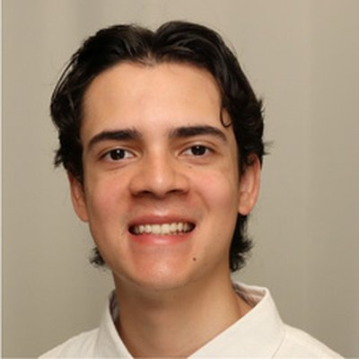
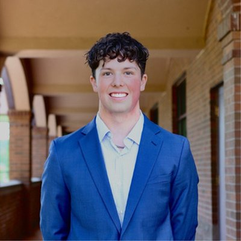
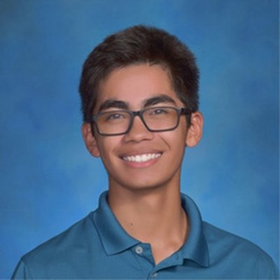

Nike Campus Visit
- Full campus tour of Nike World Headquarters
- Career conversations with Gonzaga alumni Andrew & Hayley
- Behind-the-scenes look at Nike's innovation spaces
- Discussion on building a career in a global brand organization
- Mentorship Q&A on navigating early career decisions
Mentorship Session with Torrey
- Intimate career conversation with Gonzaga alumna Torrey
- Discussion on non-linear career paths and self-trust
- Candid advice on consulting, leadership, and knowing your worth
- Open Q&A on doing hard things early in your career
- Reflection on how to use your voice in professional settings



"Meeting with such a down-to-earth alumna like Torrey was super reassuring and motivating. She always gives the most honest advice — every time I speak with her, I feel more motivated about post-grad life."
Grow Through GSCG
"The tour broadened my perspective on how much variety there is in both business problems and working cultures. My biggest takeaway was the importance of buying into a company's vision — and finding my own 'why.'"
Do Hard Things"My biggest takeaway was learning how to ensure my voice gets heard as a woman in business. Torrey modeled exactly what it looks like to lead with confidence and earn your seat at the table."
Do Hard Things
"Talking with Torrey was an absolute wake-up call to trust my own abilities. I really limit myself sometimes — but hearing her perspective helped me realize I am more capable than I give myself credit for."
Grow Through GSCG"Torrey's career path was not a straight line — hearing how and why she moved from place to place helped me realize that my own uncertainty is not a weakness. It's part of the process."
Grow Through GSCG
"Talking with Torrey gave me a clearer picture of what consulting could actually look like post-graduation. It made a career in sports feel genuinely within reach for the first time."
Grow Through GSCG"It was really interesting to hear what consulting actually looks like day to day — and hearing that it is okay to not have everything figured out was exactly what I needed to hear right now."
Support Each Other's Growth